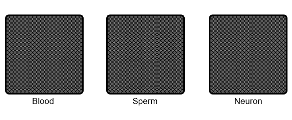

Gene Silencing

There are numerous genes in the genome, but a cell expresses only a subset of genes to establish its own identity. Thus, cell type-specific gene expression is at the core of cell fate determination. Gene silencing mechanisms play an essential roles in transcriptional fidelity by blocking misexpression of inappropriate genes. Our group is interested in the role of chromatin modifying proteins in preventing spurious transcription. In particular,
- How is chromatin modified and organized to maintain the 'silent' state?
- How do the gene silencing mechanisms ensure cell type-specific gene expression and safeguard cell fate?
- How do these mechanisms orchestrate the burst of testis-specific gene expression, support male fertility, and contribute to ensuing embryonic development?
Spermatogenesis
The testis has the most diverse transcriptome. Some genes have second testis-specific promoters that are regulated by testis-specific paralogous regulatory proteins. Because these new regulatory inventions drive dramatic gene expression changes, it is possible to observe the divergent behavior of chromatin regulators and advance our understanding of their mechanism of action. Thus, the male germ line will be the uniting principal model for our lab, and we will employ both fly and mouse models to utilize the unique advantages of each system.
• Details to be updated. In the meantime, please see
publications for the past work.